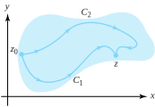
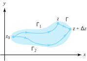

Let \(f\) be analytic in the simply connected domain \(D\text{.}\) The theorems in this section show that an antiderivative \(F\) can be constructed by contour integration. A consequence will be the fact that in a simply connected domain, the integral of an analytic function \(f\) along any contour joining \(z_1\) to \(z_2\) is the same, and its value is given by \(F(z_2) -F(z_1)\text{.}\) As a result, we can use the antiderivative formulas from calculus to compute the value of definite integrals.
Theorem6.4.1.Indefinite integrals, or antiderivatives.
Let \(f\) be analytic in the simply connected domain \(D\text{.}\) If \(z_0\) is a fixed value in \(D\text{,}\) and if \(C\) is any contour in \(D\) with initial point \(z_0\) and terminal point \(z\text{,}\) then the function
is well-defined and analytic in \(D\text{,}\) with its derivative given by \(F\,'(z)=f(z)\text{.}\)
Proof.
We first establish that the integral is independent of the path of integration. This will show that the function \(F\) is well-defi.e., which in turn will justify the notation \(F(z)=\int_{z_0}^zf(\xi)\,d\xi\text{.}\)
We let \(C_1\) and \(C_2\) be two contours in \(D\text{,}\) both with initial point \(z_0\) and terminal point \(z\text{,}\) as shown in Figure 6.4.2.

Figure6.4.2.The contours \(C_1\) and \(C_2\) joining \(z_0\) to \(z\)
Then \(C_1-C_2\) is a simple closed contour, and the Cauchy-Goursat theorem implies that
Therefore, the contour integral in Equation (6.4.1) is independent of path. Here we have taken the liberty of drawing contours that intersect only at the endpoints. A slight modification of the proof shows that a finite number of other points of intersection are permitted.
We now show that \(F\,'(z)=f(z)\text{.}\) Let \(z\) be held fixed, and let \(\left\vert \Delta z\right\vert\) be chosen small enough so that the point \(z+\Delta z\) also lies in the domain \(D\text{.}\) Since \(z\) is held fixed, \(f(z)=K\text{,}\) where \(K\) is a constant, and Equation (6.1.9) implies that
\begin{equation}
\int_z^{z+\Delta z}f(z)\,d\xi = \int_z^{z+\Delta z}K\,d\xi = K \Delta z = f(z) \Delta z\text{.}\tag{6.4.2}
\end{equation}
Using the additive property of contours and the definition of \(F\) given in Equation (6.4.1), we have
where the contour \(\Gamma\) is the straight-line segment joining \(z\) to \(z+\Delta z\text{,}\) and \(\Gamma_1\) and \(\Gamma_2\) join \(z_0\) to \(z\text{,}\) and \(z_0\) to \(z+\Delta z\text{,}\) respectively, as shown in Figure 6.4.3.

Figure6.4.3.The contours \(\Gamma _1\) and \(\Gamma _2\) and the line segment \(\Gamma\)
Since \(f\) is continuous at \(z\text{,}\) for any \(\varepsilon >0\) there is a \(\delta>0\) so that
If we require that \(\left\vert \Delta z\right\vert \lt \delta\) and combine this last inequality with Equations (6.4.2) and (6.4.3), and Theorem (6.2.14), we get
Thus \(\left|\frac{F(z+\Delta z) -F(z)}{\Delta z}-f(z)\right|\) tends to 0 as \(\Delta z \to 0\text{,}\) so \(F\,'(z)=f(z)\text{.}\)
Remark6.4.4.
It is important to stress that the line integral of an analytic function is independent of path. In Example 6.2.14 we showed that \(\int_{C_1}z\ dz=\int_{C_2}z\ dz=4+2i\text{,}\) where \(C_1\) and \(C_2\) were different contours joining \(-1-i\) to \(3+i\text{.}\) Because the integrand \(f(z)=z\) is an analytic function, Theorem 6.4.1 lets us know ahead of time that the value of the two integrals is the same; hence one calculation would have sufficed. If you ever have to compute a line integral of an analytic function over a difficult contour, change the contour to something easier. You are guaranteed to get the same answer. Of course, you must be sure that the function you’re dealing with is analytic in a simply connected domain containing your original and new contours.
If we set \(z=z_1\) in Theorem 6.4.1, then we obtain the following familiar result for evaluating a definite integral of an analytic function.
Theorem6.4.5.Definite integrals.
Let \(f\) be analytic in a simply connected domain \(D\text{.}\) If \(z_0\) and \(z_1\) are any two points in \(D\) joined by a contour \(C\text{,}\) then
where \(F\) is any antiderivative of \(f\) in \(D\text{.}\)
Proof.
If we choose \(F\) to be the function defined by Formula (6.4.1), then Equation (6.4.4) holds. If \(G\) is any other antiderivative of \(f\) in \(D\text{,}\) then \(G\,'(z)=F\,'(z)\) for all \(z\in D\text{.}\) Thus the function \(H(z)=G(z) -F(z)\) is analytic in \(D\text{,}\) and \(H\,'(z) = G\,'(z)-F\,'(z) = 0\text{,}\) for all \(z\in D\text{.}\) Thus, by Theorem 3.2.13, this means \(H(z)=K\text{,}\) for all \(z\in D\text{,}\) where \(K\) is some complex constant. Therefore \(G(z)=F(z) +K\text{,}\) so \(G(z_1)-G(z_0) = F(z_1)-F(z_0)\text{,}\) which establishes our theorem.
Theorem 6.4.5 gives an important method for evaluating definite integrals when the integrand is an analytic function in a simply connected domain. In essence, it permits you to use all the rules of integration that you learned in calculus. When the conditions of Theorem 6.4.5 are met, applying it is generally much easier than parametrizing a contour.
Example6.4.6.
Show that \(\displaystyle \int_C\frac{1}{2z^{\frac{1}{2}}}\,dz = 1+i\text{,}\) where \(z^{\frac{1}{2}}\) is the principal branch of the square root function and \(C\) is the line segment joining 4 to \(8+6i\text{.}\)
Solution.
We showed in Chapter 3 that if \(F(z)=z^{\frac{1}{2}}\text{,}\) then \(F\,'(z)=\frac{1}{2z^{\frac{1}{2}}}\text{,}\) where the principal branch of the square root function is used in both the formulas for \(F\) and \(F\,'\text{.}\) We note that \(C\) is contained in the simply connected domain \(D_4(6+3i)\text{,}\) which is the open disk of radius 4 centered at the midpoint of the segment \(C\text{.}\) Since \(f(z)=\frac{1}{2z^{\frac{1}{2}}}\) is analytic in \(D_4(6+3i)\text{,}\)Theorem 6.4.5 implies
We know that \(f(z)=\frac{{1}}{z}\) is analytic in \(D\) and has an antiderivative \(F(z)=\mathrm{Log}(z)\text{,}\) for all \(z\in D\text{.}\) If \(C\) is a contour in \(D\) that joins the point \(z_1\) to the point \(z_2\text{,}\) then Theorem 6.4.5 implies that
Show that \(\int_{C_1^+(0)}\frac{dz}{z} = 2\pi i\text{.}\)
Solution.
Recall that \(C_1^+(0)\) is the unit circle with positive orientation. We let \(C\) be that circle with the point \(-1\) omitted, as shown in Figure 6.4.9(b). The contour \(C\) is contained in the simply connected domain \(D\) of Example 6.4.8. We know that \(f(z)=\frac{1 }{z}\) is analytic in \(D\text{,}\) and has an antiderivative \(F(z)= \mathrm{Log}(z)\text{,}\) for all \(z\in D\text{.}\) Therefore, if we let \(z_2\) approach \(-1\) on \(C\) through the upper half-plane and \(z_1\) approach \(-1\) on \(C\) through the lower half-plane,
\(\int_C\frac{z-2}{z^2-z}\ dz\text{,}\) where \(C\) is the line segment from \(2\) to \(2+i\text{.}\)
15.
Show that \(\int_C1\ dz=z_2-z_1\text{,}\) where \(C\) is the line segment from \(z_1\) to \(z_2\text{,}\) by parametrizing \(C\text{.}\)
Solution.
Parametrize \(C\) with \(z(t) = z_1 + ( z_2-z_1)t, \, 0 \le t \le 1\text{.}\) Then we see that \(\int_{C}1\,dz = \int_0^{1}z\,'(t)\,dt = \int_0^{1}(z_2-z_1)\,dt = (z_2-z_1)t\Big|_{t=0}^{t=1} = z_2-z_1\text{.}\)
16.
Let \(z_1\) and \(z_2\) be points in the right half-plane and let \(C\) be the line segment joining them. Show that \(\int_C \frac{1}{z^2}\,dz = \frac{1}{z_1}-\frac{1}{z_2}\text{.}\)
17.
Let \(z^{\frac{1}{2}}\) be the principal branch of the square root function.
(a)
Evaluate \(\int_C\frac{1}{2z^{\frac{1}{2}}}\,dz\text{,}\) where \(C\) is the line segment joining \(9\) to \(3+4i\text{.}\)
Solution.
\(-1+i\text{.}\)
(b)
Evaluate \(\int_Cz^{\frac{1}{2}}\ dz\text{,}\) where \(C\) is the right half of the circle \(C_2^+(0)\) joining \(-2i\) to \(2i\text{.}\)
18.
Using partial fraction decomposition, show that if \(z\) lies in the right half-plane and \(C\) is the line segment joining \(0\) to \(z\text{,}\) then \label {6.4.18}
Let \(f\,'\) and \(g\,'\) be analytic for all \(z\text{,}\) and let \(C\) be any contour joining the points \(z_1\) and \(z_2\text{.}\) Show that \label {6.4.19}
We know that an antiderivative of the function \(fg\,' + gf\,'\) is \(fg\) by the product rule. Since \(fg\,'\) and \(gf\,'\) are analytic (explain why!), Theorem 6.4.5 gives us \(\int_{C}\left[ f(z) g\,'( z) +g(z) f\,'(z) \right]dz = f(z)g(z)\Big|_{z=z_1}^{z=z_2}\text{.}\) Explain why the conclusion now follows.
20.
Compare the various methods for evaluating contour integrals. What are the limitations of each method?
21.
Explain how the fundamental theorem of calculus studied in complex analysis and the fundamental theorem of calculus studied in calculus are different. How are they similar?
22.
Show that \(\int_Cz^{i}dz=(i-1) \frac{1+e^{-\pi}}{2}\text{,}\) where \(C\) is the upper half of \(C_1^+(0)\text{.}\)